4. CCS Setup for J721S2¶
Code Composer Studio is an integrated development environment (IDE) that supports TI’s Micro controller and Embedded Processors portfolio. It provides useful tools to develop and debug embedded applications.
Please visit Code Composer Studio product (https://www.ti.com/tool/ccstudio) for more information.
4.1. CPU names used in PDK vs CCS¶
Below table shows the mapping of names in PSDK RTOS and CCS
| CPU name in PSDK RTOS | CPU name in CCS |
|---|---|
| mcu1_0 / mcu1_1 | MCU_Cortex_R5_0 / MCU_Cortex_R5_1 |
| mcu2_0 / mcu2_1 | MAIN_Cortex_R5_0_0 / MAIN_Cortex_R5_0_1 |
| mcu3_0 / mcu3_1 | MAIN_Cortex_R5_1_0 / MAIN_Cortex_R5_1_1 |
| c7x_1 | C71x_0 |
| c7x_2 | C72x_0 |
| mpu1 | CortexA72_0_0 |
4.2. Step 1: Install CCS¶
Install CCS v11.0 : CCS can be downloaded from https://software-dl.ti.com/ccs/esd/documents/ccs_downloads.html#code-composer-studio-version-11-downloads
CCS installation details are available on https://software-dl.ti.com/ccs/esd/CCSv11/CCS_11_0_0/exports/CCS_11.0.0_ReleaseNotes.htm
This release is tested on below CCS version 11.0.0.00012
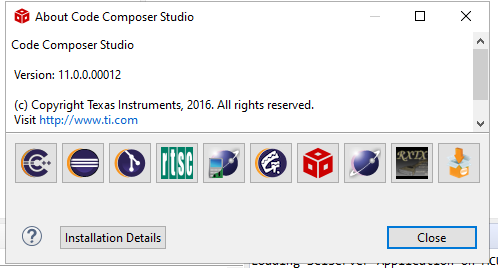Fig. 4.1 CCS: IDE version
During installation, there is a ‘Setup’ step where you can select components. Be sure to select: “TDAx Driver Assistance SoCs & Jacinto DRAx Infotainment SoCs” as shown below:
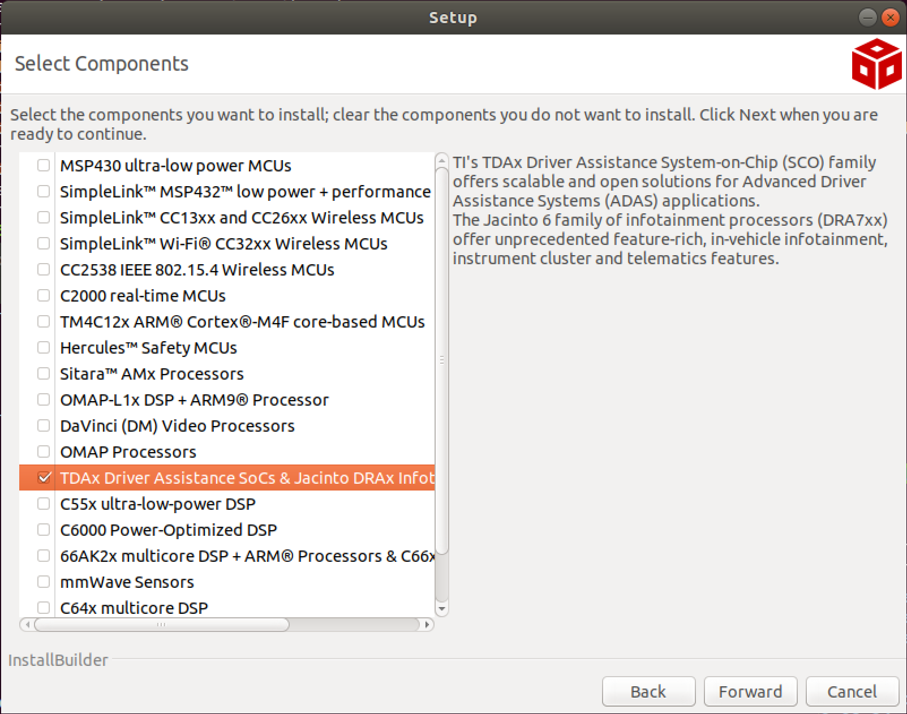Fig. 4.2 CCS: Download Components
Here after we’ll be referring to the CCS installation directory as ${CCS_INSTALL_PATH}
In Linux, this will be
${HOME}/ti/ccsv1100/ccsIn Windows, this will be
C:\\ti\\ccsv1100\\ccs\
4.3. Step 2: Install CCS Chip Support Package and Emulation packs¶
Note
- J721S2 CSP is included in the PDK Package
- This is present in ${PDK_INSTALL_DIR}/J721S2_CSP
4.3.1. Step 2.1: Install CSP (chip support package) for J721S2 SoC¶
For Windows,
- Copy the contents of the folder ${PDK_INSTALL_DIR}/J721S2_CSP/ccs_patch_windows/ccs_base to the ${CCS_INSTALL_PATH}/ccs_base folder.
For Linux,
- Copy the contents of the folder ${PDK_INSTALL_DIR}/J721S2_CSP/ccs_patch_linux/ccs_base to the ${CCS_INSTALL_PATH}/ccs_base folder.
Make sure that you replace the files when prompted.
Copy the contents of the folder ${PDK_INSTALL_DIR}/J721S2_CSP/gel to the ${CCS_INSTALL_PATH}/ccs_base/emulation/gel folder.
4.3.2. Step 2.1: Install CCS emulation pack¶
- Install the following file in ${PDK_INSTALL_DIR}/J721S2_CSP to ${CCS_INSTALL_PATH}.
- For Windows,
- ti_emupack_setup_9.5.0.00153_win_64.exe
- For Linux,
- ti_emupack_setup_9.5.0.00153_linux_x86_64.bin
- For Windows,
Warning
- When prompted for installation folder, you should give the installation folder as ${CCS_INSTALL_PATH}
Warning
For Linux, After CCS installion run the install drivers script:
Go to the install scripts directory.
cd ${CCS_INSTALL_PATH}/install_scriptsRun install script as sudo
sudo ./install_drivers.shRestart your PC
4.4. Step 3: Setup CCS target configuration and GELs files¶
Create a CCS target config, you can name it J721S2_EVM.ccxml.
In Code Composer Studio, go to the File menu and select New -> Target Configuration File
Name the Target Configuration file as J721S2_EVM.ccxml and click Finish
Select Connection as Texas Instruments XDS110 USB Debug Probe, if you are using on board debugger (J3 usb connector)
Select Connection as Spectrum Digital XDS560V2 STM USB Emulator, if you are using Spectrum digital XDS560 USB debugger connected to JTAG Mipi connector (J16)
Select the Board as Jacinto7AEP shown below
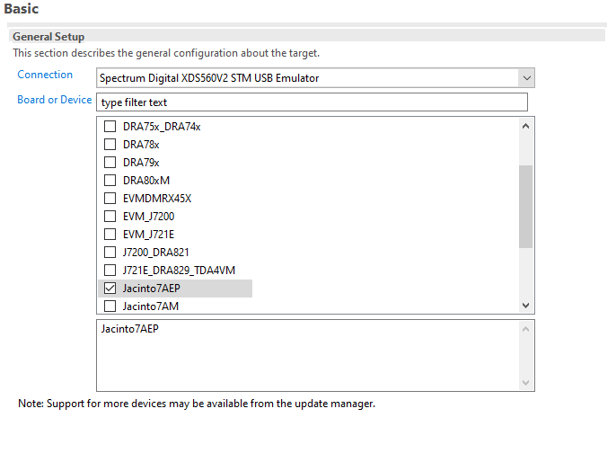Fig. 4.3 CCS: Target Configuration
Load the initialization script of the Cortex_M4F_0 core with the J7AEP Gels as shown below.
Open the Advanced tab of the target configuration file J721S2_EVM.ccxml
Go to CORTEX_M4F_0 under SMS_TIFSM
Set the initialization script
Gel files can be found at below path
**${CCS_INSTALL_PATH}/ccs_base/emulation/gel/J7AEP_TDA4AL/J7AEP_SI.gel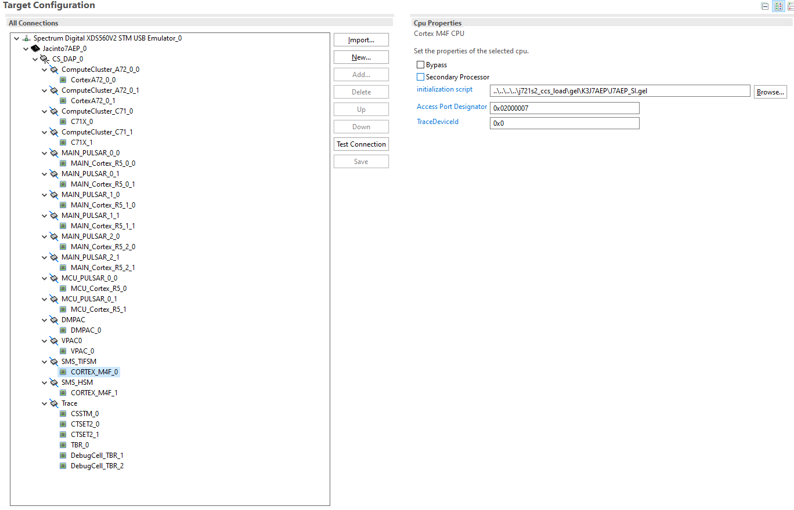Fig. 4.4 CCS: Target Configuration Initialization Script
4.5. Step 4: Load RTOS/baremetal application binaries thru CCS¶
Note
- When using CCS boot flow, please configure EVM in NOBOOT mode for connecting and loading binaries via CCS.
- NO BOOT Mode Switch Settings:-
- SW8[1-8] = 1000 1000
- SW9[1-8] = 0111 0000
- The launch.js file below is responsible to load and run the DMSC. It is also responsible to set the board configuration input for the DMSC. The board configuration is passed by the PDK example ${PDK_INSTALL_DIR}/pdk_j721s2_{version}/packages/ti/drv/sciclient/examples/sciclient_ccs_init executing on the MCU R5F core. The default board configuration is available for reference at ${PDK_INSTALL_DIR}/pdk_j721s2_{version}/packages/ti/drv/sciclient/soc/V1/sciclient_defaultBoardcfg.c
- All PDK and SDK examples require the DMSC firmware to be executed.
- launch.js file is also responsible to load the ${PDK_INSTALL_DIR}/pdk_j721s2_{version}/packages/ti/drv/sciclient/examples/sciserver_testapp which is used to service the RM and PM services on MCU1_0. The sciserver_testapp is a simple RTOS based application which runs the Sciserver used to service RM and PM requests from cores other than MCU1_0.
- For applications developed and debugged on MCU1_0 application one can disable loading the Sciserver_testapp by setting the loadSciserverFlag to 0.
GEL initialization
Open the launch.js script in an editor. Script is present in below path:
${PDK_INSTALL_DIR}/pdk_j721s2_{version}/packages/ti/drv/sciclient/tools/ccsLoadDmsc/j721s2/launch.js${PDK_INSTALL_DIR} is the path to your PDK installation
Edit the variable “pdkPath” with the absolute path of the pdk package, i.e ${PDK_INSTALL_DIR}/pdk_j721s2_{version}/packages
Open Code Composer Studio and launch the Target Configuration previously setup
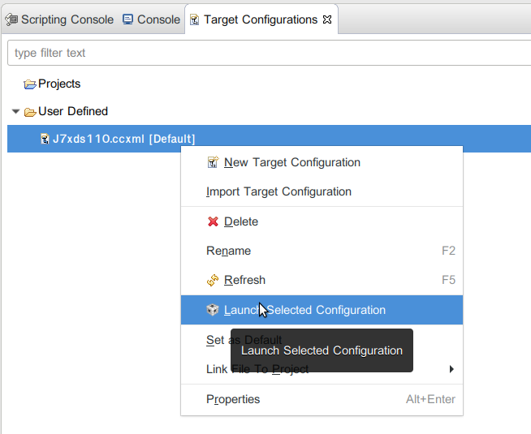Fig. 4.5 CCS: Launch CCS Target Configuration
Go to the View Target configurations and launch a target configuration is done by right clicking on it.
Open the scripting console in CCS - Go to the View menu and then select Scripting Console
Load the launch.js script as shown below.
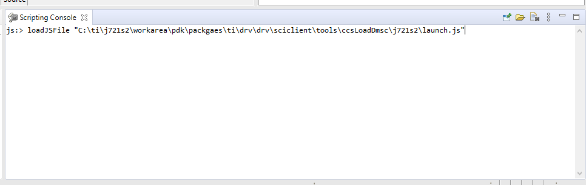Fig. 4.6 CCS: Launch script
Wait till the script finishes. This step can take considerable time as it configures PLL etc. in the SOC via GEL files and configures DDR. This will connect to the MCU_Cortex_R5_0 core.
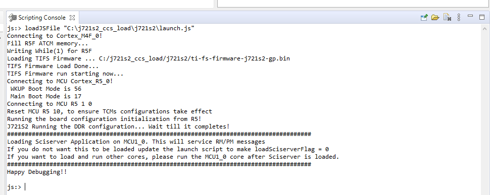Fig. 4.7 CCS: Scripting Console Output
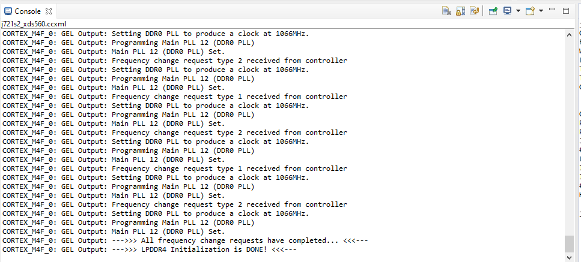Fig. 4.8 CCS: Console Output
After script completes execution you should see below in Debug window
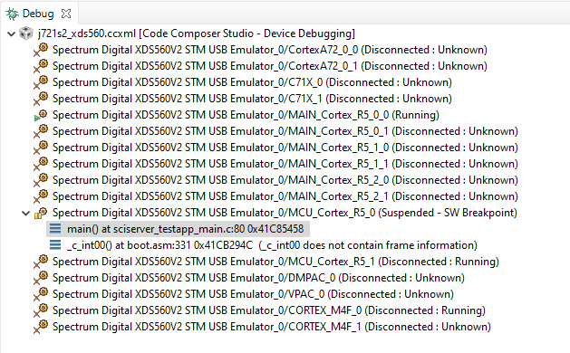Fig. 4.9 CCS: Launch script Complete
Load and run the binaries in CCS. Debug as usual using CCS.
Now you can connect to any core and load the corresponding application binaries.
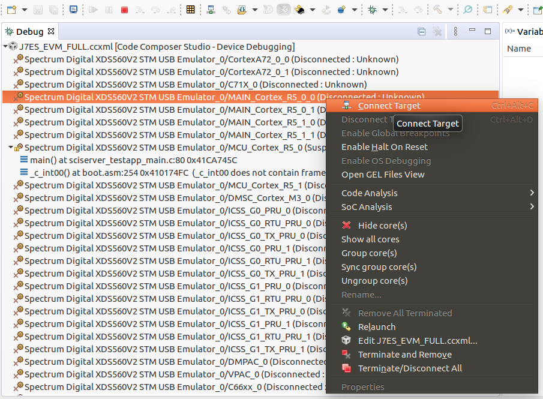Fig. 4.10 CCS: Loading the demo application binary
Go to the Run menu and then select Load -> Select Program to Load
In the Load Program window, browse to application binary you want to load.
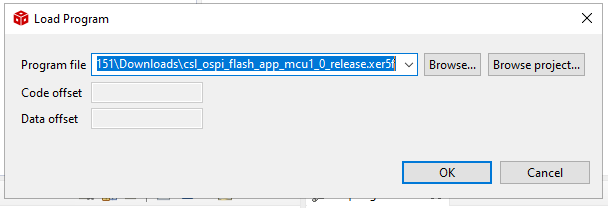Fig. 4.11 CCS: Loading the demo application binary
Go to the Run menu and then select Resume to start executing demo binary.